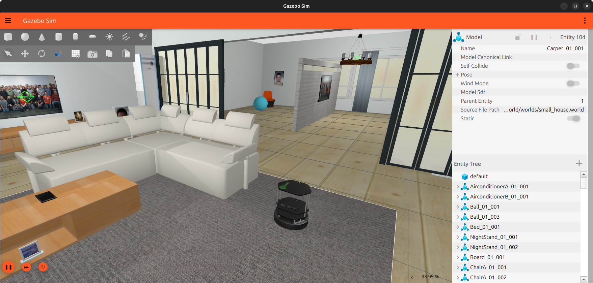
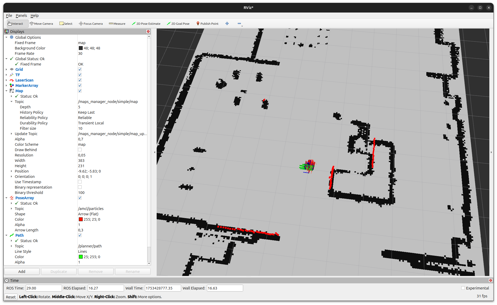
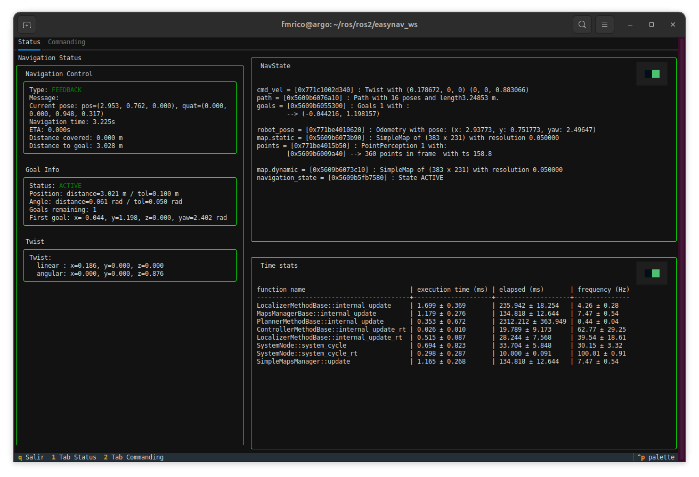

Getting Started
This section guides you through your first run of EasyNavigation (EasyNav) using a simulated Turtlebot2 robot in a domestic environment.
If you have not yet installed EasyNav, please complete the steps in Build & Install.
Overview
We will run a ready-to-use simulation setup consisting of:
Robot: Turtlebot2 (Kobuki)
Environment: indoor domestic map
Stack: Simple Stack included within easynav_plugins
Simulator: Gazebo Harmonic with RViz2 visualization
Workspace layout
This guide builds two extra packages on top of your EasyNav installation:
easynav_playground_kobuki (the Gazebo simulation) and easynav_indoor_testcase
(maps, parameter files and RViz configurations). These are example/demo content and
are only distributed as source, so you need a small colcon workspace at
~/easynav_ws regardless of which method you used to install EasyNav’s core
packages in Build & Install:
Installed via Install from binaries (APT): create the workspace now.
mkdir -p ~/easynav_ws/src
Installed via Install via Pixi: reuse the workspace where you saved your
pixi.toml(~/easynav_ws), and add the build tools needed to compile source packages inside the Pixi environment.cd ~/easynav_ws pixi add colcon-common-extensions compilers cmake make ninja pkg-config rosdep mkdir -p src
Installed via Build from source: you already have this workspace, with
EasyNavigation,NavMap,easynav_pluginsandyaetscloned undersrc/.
Clone the demo repositories into ~/easynav_ws/src and install their dependencies:
cd ~/easynav_ws/src
git clone https://github.com/EasyNavigation/easynav_playground_kobuki.git
git clone https://github.com/EasyNavigation/easynav_indoor_testcase.git
# Clone third-party dependencies using vcs tool
vcs import . < easynav_playground_kobuki/thirdparty.repos
# Install dependencies via rosdep
cd ~/easynav_ws
rosdep install --from-paths src --ignore-src -y -r
Build and source the workspace
cd ~/easynav_ws
colcon build --symlink-install
Then source the environment, depending on how you installed EasyNav:
APT or build from source:
source /opt/ros/<distro>/setup.bash source ~/easynav_ws/install/setup.bash
Pixi (run inside
pixi shell, or prefix commands withpixi run):source ~/easynav_ws/install/setup.bash
You will need to repeat this sourcing step in every new terminal you open for the rest of this guide.
Repository overview
easynav_playground_kobuki –> Gazebo simulation for the Turtlebot2 (Kobuki).
easynav_indoor_testcase –> provides maps, parameter files, and RViz configurations for indoor navigation.
Simulation setup
Once your workspace is built and sourced, launch the Gazebo simulation:
cd ~/easynav_ws
ros2 launch easynav_playground_kobuki playground_kobuki.launch.py
This starts a Gazebo Harmonic simulation of a Turtlebot2 robot in a domestic environment.

To save resources, you can disable the Gazebo graphical interface:
ros2 launch easynav_playground_kobuki playground_kobuki.launch.py gui:=false
Visualizing in RViz2
Open another new terminal and start RViz2 with the provided configuration:
# Note: First, source the environment as shown previously.
ros2 run rviz2 rviz2 \
-d ~/easynav_ws/src/easynav_indoor_testcase/rviz/simple.rviz \
--ros-args -p use_sim_time:=true

Note
In RViz2, ensure the QoS of the /map topic is set to Transient Local
so that the map is properly displayed when EasyNav publishes it.
Visualizing internal process with the TUI
In addition to RViz2, EasyNav provides a Terminal User Interface (TUI) that allows you to monitor the internal state of the navigation system in real time. It is a text-based dashboard that displays key diagnostic information and performance metrics directly in the terminal.
You can launch it in a new terminal after starting the EasyNav system:
ros2 run easynav_tools tui
The TUI is divided into several panels:
Navigation Control: shows the current navigation mode (e.g., FEEDBACK, ACTIVE), current robot pose, progress toward the goal, and remaining distance.
Goal Info: displays details of the active navigation goal, angular and positional tolerances, and goal list.
Twist: real-time linear and angular velocity commands issued by the controller.
NavState: shows internal blackboard data structures such as robot_pose, cmd_vel, active map, and navigation_state.
Time stats: performance profiling of each system component (localizer, planner, controller, maps manager, etc.) including average execution time and update frequency.
This interface is especially useful for debugging or performance evaluation without relying on graphical tools.
{kind=link}

Press q to exit the TUI.
Note
The TUI is optimized for dark terminals and supports color highlighting for active modules and real-time performance indicators.
Troubleshooting
Robot does not move: ensure that both Gazebo and EasyNav terminals are running and synchronized with the same simulation time (use_sim_time:=true).
Map not visible in RViz2: check the QoS setting and verify the /map topic is being published.
Build errors: revisit Build & Install and ensure dependencies were correctly installed via rosdep.
Next steps
You have successfully launched EasyNav with a simulated robot!
Continue exploring:
HowTos and Practical Guides — follow practical guides for mapping, navigation, and real robot deployment.
Developers Guide — dive into the internal design and architecture of the EasyNav framework.